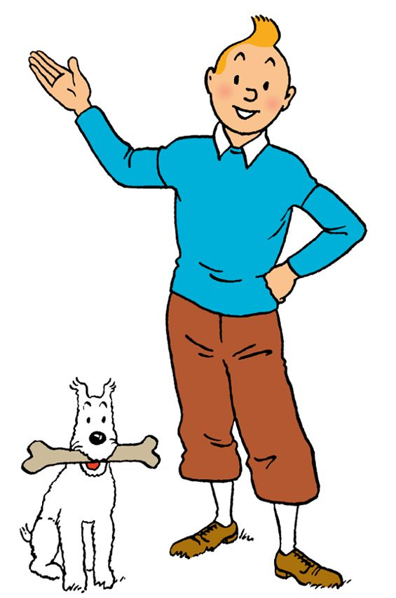

About Me
Hello Everyone, my name is Devansh and I am a level 1 student in the IMD program. I was born and raised in India in a small yet popular tourist city which gave me a unique exposure to different cultures in my early childhood years. Before coming to Algonquin, I also studied History & Theory of Architecture at Carleton university. I have always found the design, planning & development of built environment quite intriguing. Apart from architecture I take keen interest in Gastronomy and sustainable practices involving food production, consumption, and waste management. I am also a passionate soccer fan who knows a thing or two about the business and entertainment side of the sport.
My work and school life has largely consisted of research and detail-oriented work. This enables me to contribute to these areas of a project. I also speak four languages, which could be of use depending on the type of work. My background in architecture has educated me on how design affects our society, how do people respond to design and what can be done to improve the function and/or aesthetics of a product, space or experience. These skills could help in the creative process to understand and hopefully exceed the expectations of the client or the professor. Content writing and proof reading are also a part of my skillset.
My hobbies
- Photography
- Illustration
- Cooking
- Soccer
- Documentaries
- Gaming
"Only the Best is good enough." - Ole Kirk Christiansen